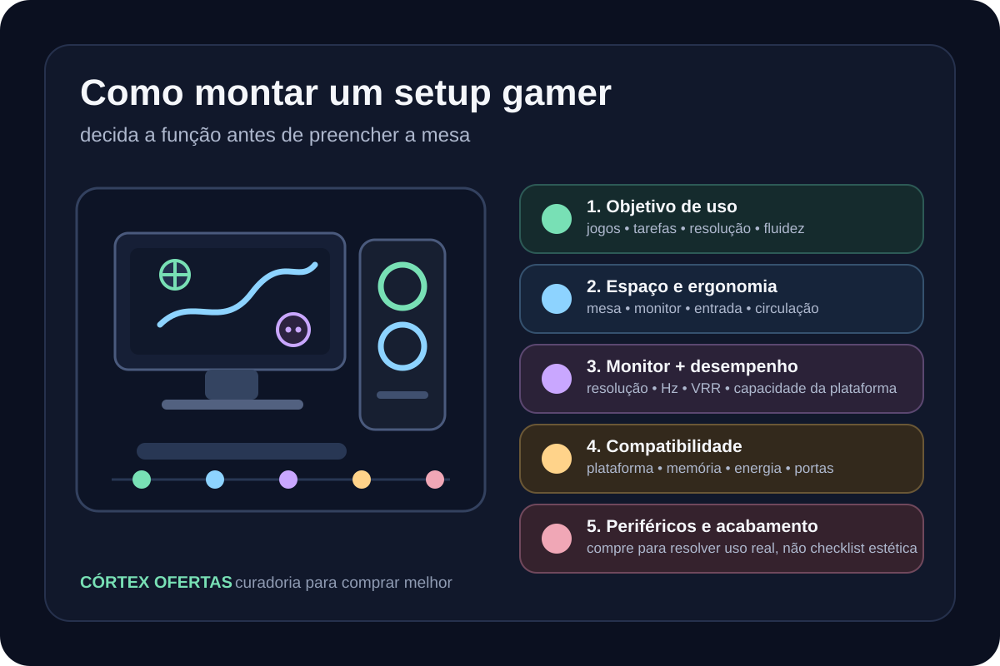

setup gamer
Como montar um setup gamer: ordem de decisões antes da compra
Guia clean-room para planejar um setup gamer por objetivo, compatibilidade e ergonomia, evitando uma lista universal de compras.

Defina o objetivo antes de escolher peças
Liste os jogos e tarefas que realmente serão usados, a resolução pretendida e se a prioridade é fluidez, qualidade visual, trabalho híbrido ou uma combinação. Isso transforma a compra em requisitos verificáveis em vez de copiar uma configuração pronta.
- jogos e tarefas
- resolução
- fluidez pretendida
- uso híbrido
Meça o espaço e organize a ergonomia
Mesa, cadeira, monitor, teclado e mouse precisam funcionar como uma estação única. A orientação ergonômica da OSHA para estações de computador enfatiza ajuste do posto, posicionamento de monitor e dispositivos de entrada; por isso, espaço útil e postura entram antes de acessórios decorativos.
- área útil da mesa
- posição do monitor
- teclado e mouse
- cabos e circulação
Escolha monitor e desempenho como um sistema
Resolução e taxa de atualização não devem ser tratadas isoladamente. A Microsoft documenta que as taxas disponíveis dependem do que a tela suporta e que algumas combinações de taxa e resolução podem exigir mudança de resolução. A plataforma deve ser dimensionada para a experiência desejada, sem assumir que o maior número de Hz é automaticamente a melhor compra.
- resolução
- taxa de atualização
- VRR quando aplicável
- capacidade da plataforma
Valide compatibilidade antes de fechar a configuração
Depois de definir o alvo de uso, confirme compatibilidade entre plataforma, memória, armazenamento, fonte, gabinete, portas e monitor conforme as especificações dos componentes escolhidos. A Córtex evita transformar uma combinação genérica em recomendação universal.
- plataforma
- memória e armazenamento
- energia e espaço físico
- portas e monitor
Periféricos e acabamento vêm depois da base funcional
Headset, teclado, mouse, iluminação, suportes e organização podem melhorar a experiência, mas devem responder ao uso real e ao orçamento restante. A compra é encerrada por prioridade, não pela necessidade de preencher uma checklist estética.
- periféricos essenciais
- conforto
- organização
- acabamento opcional
Antes de comprar
Confira o modelo e a variante anunciados, a compatibilidade com seus equipamentos, o vendedor, o preço e a disponibilidade na Amazon antes de concluir a compra.
Fontes verificadas
Leve estes critérios para a escolha
Compare duas opções da seleção e abra a análise para conferir a versão, as limitações e quando o preço faz sentido.